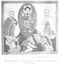

The Kebra Nagast, by E.A.W. Budge, [1922], at sacred-texts.com
84. CONCERNING THE KING OF ETHIOPIA AND HOW HE RETURNED TO HIS COUNTRY
And the King of Ethiopia returned to his country with great joy and gladness; and marching along with their songs, and their pipes, and their wagons, like an army of heavenly beings, the Ethiopians arrived from

Click to enlarge
Plate XX. The Transfiguration. Christ in converse with Moses and Elias on Mount Tabor
{kind=link}
[paragraph continues] Jerusalem at the city of Waḳêrôm in a single day. And they sent messengers in ships to announce [their arrival] to Mâkĕdâ, the Queen of Ethiopia, and to report to her how they had found every good thing, and how her son had become king, and how they had brought the heavenly Zion. And she caused all this glorious news to be spread abroad, and she made a herald to go round about in all the country that was subject unto her, ordering the people to meet her son and more particularly the heavenly Zion, the Tabernacle of the God of Israel. And they blew horns before her, and all the people of Ethiopia rejoiced, from the least to the greatest, men as well as women; and the soldiers rose up with her to meet their King. And she came to the city of the Government, which is the chief city of the kingdom of Ethiopia; now in later times this [city] became the chief city of the Christians of Ethiopia. And in it she caused to be prepared perfumes innumerable from India, and from Bâltê to Gâltêt, and from ’Alsâfu to ’Azazat, and had them brought together there. And her son came by the ’Azyâbâ road to Waḳêrôm, and he came forth to Masas, and ascended to Bûr, and arrived at the city of the Government, the capital [city] of Ethiopia, which the Queen herself had built and called "Dabra Mâkĕdâ," after her own name.